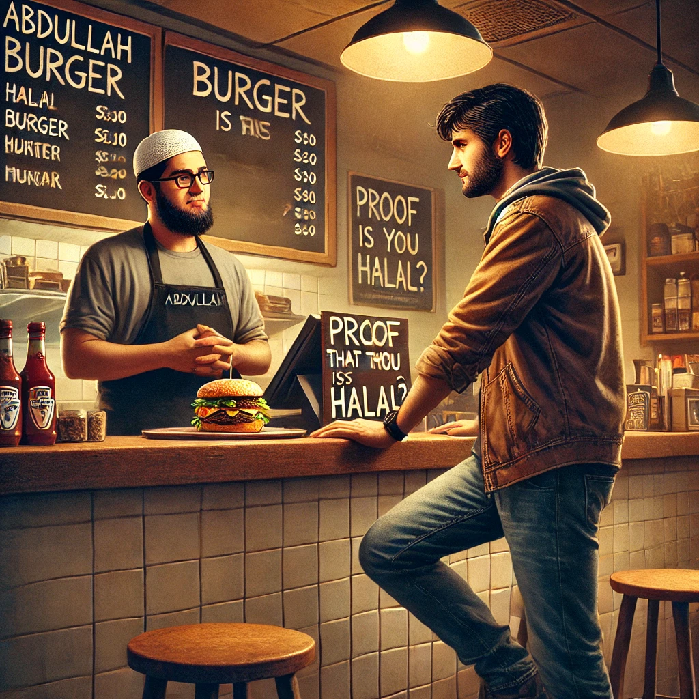
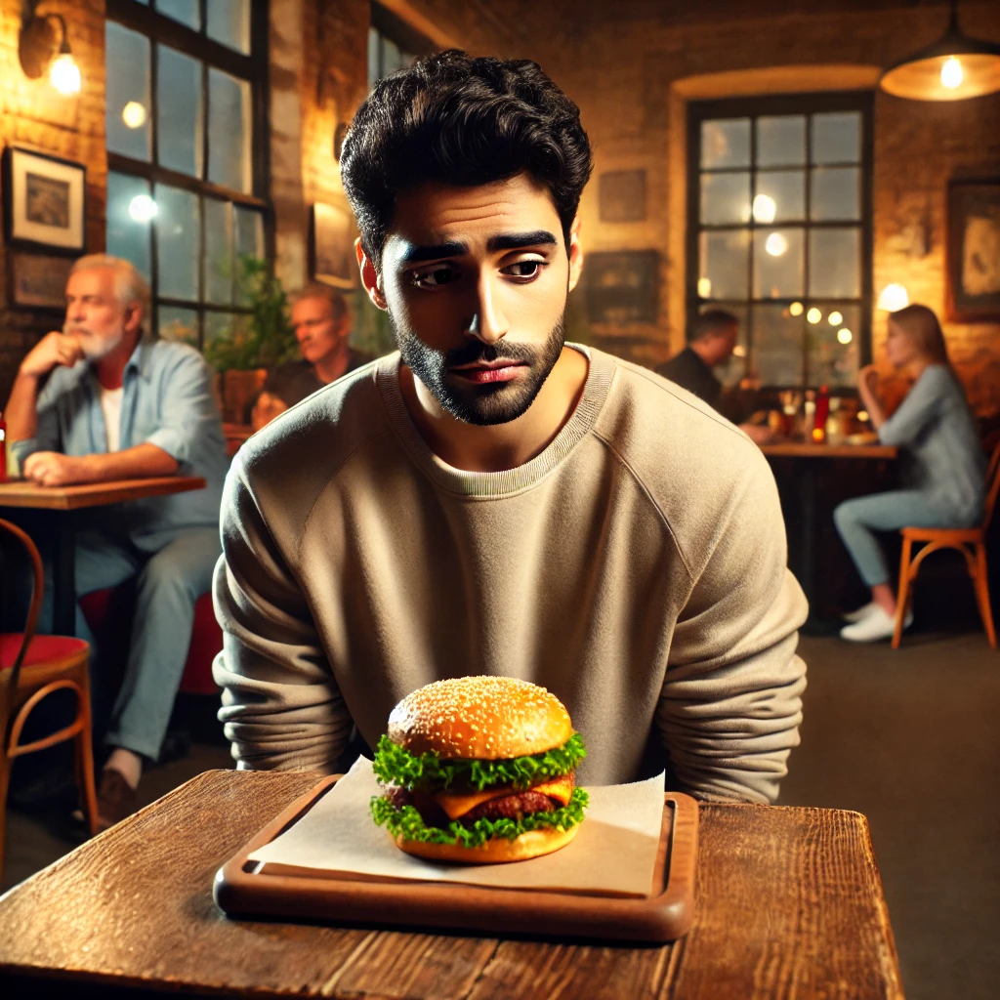

Abdullah goes to his favorite halal joint and orders his usual burger.
As he takes a bite, he wonders: “Is this really halal?”
He asks the owner for proof, but the owner hesitates to show the certificate.
Unsure about his meal, Abdullah wishes for a reliable way to verify halal restaurants.
